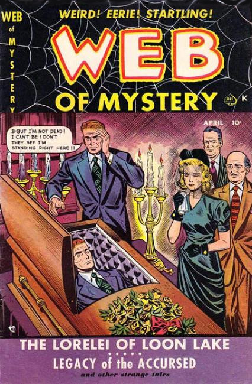
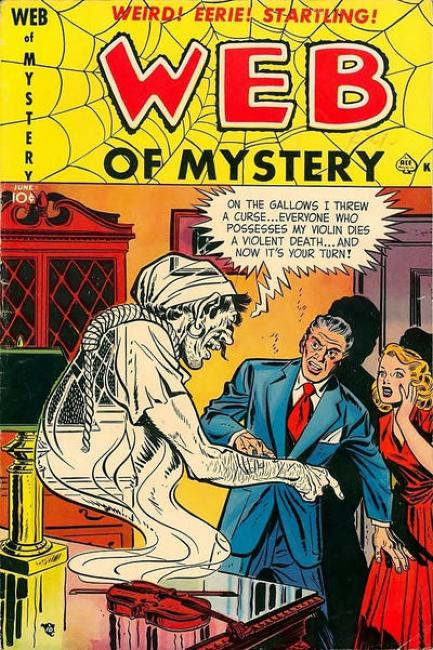
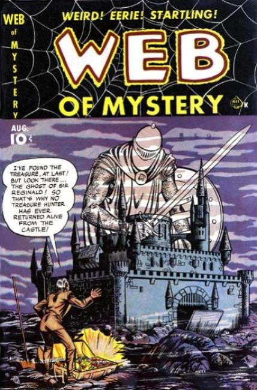
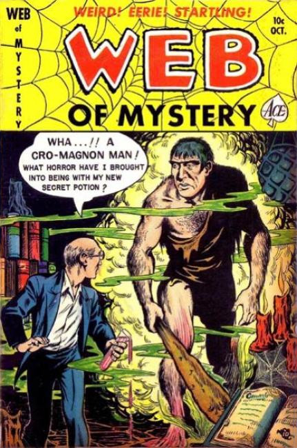
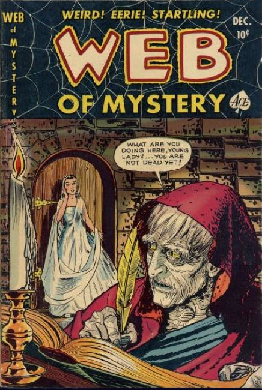
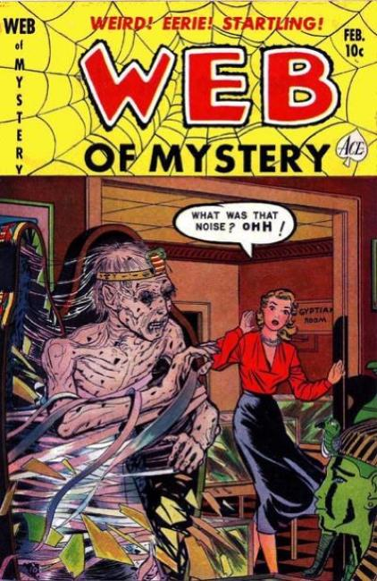
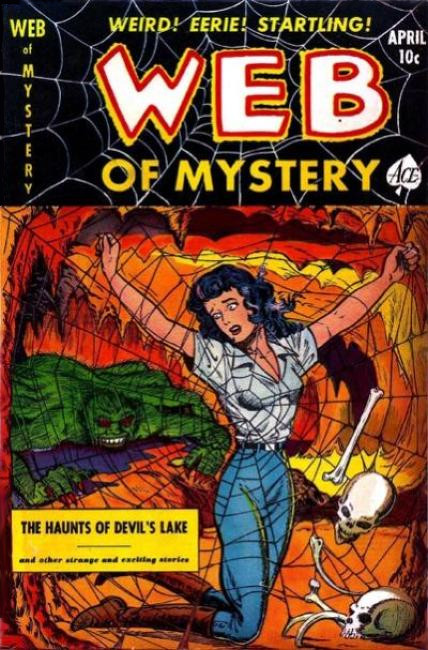
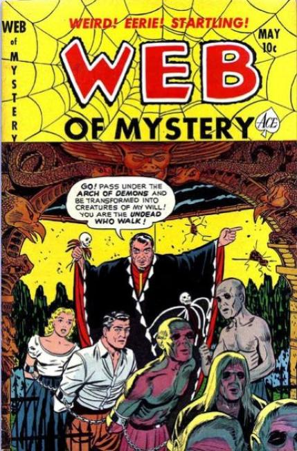
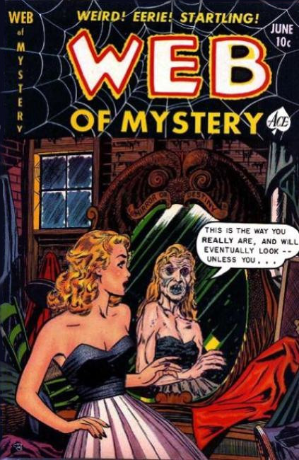
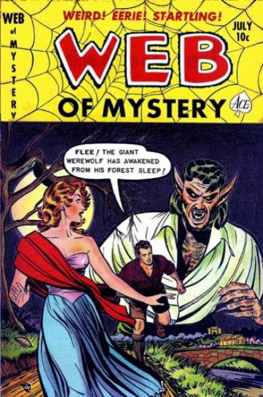

×










❮
❯
Series: Horror Anthology, 29 issues 1951 - 1952
Cover: Warren Kremer
Stories: Mike Sekowsky, Vince Alascia, Martin Marty Rose, and Ken Rice
Publisher: Ace Comics
Suspense-filled horror tales that weave a Web of Mystery for the reader.
Issue #1:
- "The Case of the Beckoning Mummy"
Archeologist Damon Knight excavates an ancient egypt tomb. He is warned by the ghost of the 8,000 years old mummy of Kali-Dahn not to desecrate his burial chamber. As Knight continues, he gets lured into the tomb and has to take the mummy's place.
-
"True Creepy Tales #1"
"We may laugh at the thought of ghosts. That's what the young Smiths, who were spending their honeymoon in Massachusetts, did".
As the couple goes on a canoe trip at night, they encounter an indian ghost canoe and get capsized.
-
"Venom of the Vampires"
A plane goes down in Honduras. The pilot, a young woman and Count Vacrini survive and make their way to the jungle. They encounter bloodsucking bats and an indian tribe. Vacrini turns out to be a necromancer and wounds the indian chief. He is killed for that, but returns as a fullgrown vampire. The pilot locks him inside a cave, where Vacrini is eaten alive by small vampire bats. Pilot and girl marry.
-
"True Creepy Tales #2"
"There is a belief among the village people of Yorkshire, England, that the soul always returns to the body once in twenty-four hours until after the funeral..." A hunter gives a lift to a taciturn traveller. On inquiring about his passenger later on, he learns that the man died a day ago.
-
"The Lamenting Voice of the Bell"
The deformed hunchback Hans Walden is a masterful bell-caster. His bells sound like the voices of angels - because he melts human bodies in the boiling cauldron as well. After manufacturing an old friend into a new bell, Walden is haunted by the ghostly tolling of the bell. He breaks down and confesses.